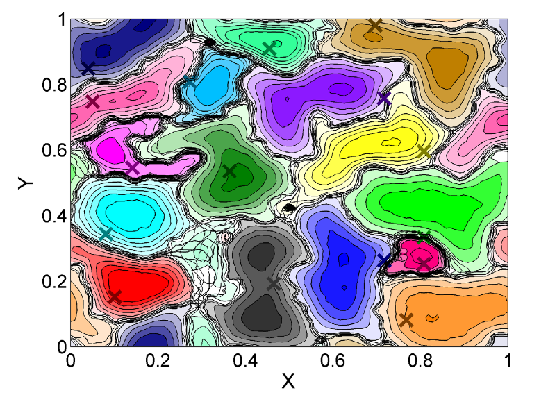

Aggregate Exposure Modelling
PCOD+ Task 1
Len Thomas, lead PI
Harwood, Pirotta, Schick, co-PIs
Outline
- Statement of the Problem
- Proposed Approach
- Logistics
- (Recent) examples from the movement literature to stimulate discussion
PCOD models need:
- The number of times an animal responds to a disturbance in a year
- The distribution of response severities
What is the Problem?
- In order to run PCOD models, we need realistic estimates of exposure. However,
- We lack exposure on individual animals at biologically realistic time frames (~1 year)
- Current models (e.g. SAFESIMM, 3MB, NAEMO, AIM), fail to do this
What we plan to do
- Produce realistic tracks while animals are on the range for a period of 1 year
- Use these to estimate exposure to noise, and compare with estimates from static models like NAEMO
- (We will only explicitly model the movements of animals when they are off the range to the extent that it affects their probability of returning to the range)
Specifics
- 365 Day Model
- Daily timestep
- Spatially implicit (on/off range)
- 1 Day Model
- Ideally continuous time
- More likely discrete (1 sec/1 min/1 hour)
- Ideally spatially continuous
Specifics - 365 Day Model
- Use long term tag data to parameterize a Markovian model
- Could be hidden Markov model
- Could borrow from patch occupancy models (MacKenzie et al. 2002, 2004, 2006)
- Could extend to include time-in-state, exposure to sonar
Specifics - 1 Day Model
- Fit inferential models to fine scale telemetry data
- HMMs
- BSSMs
- Spatial point process models
- Build fine scale IBM
What we plan to do, III
- In the IBM, while on range, explore 4 types of movements:
- No Movement
- Random
- Resource based movements
- Center of attraction/repulsion (see image below)
- Summarize Exposure
Can we verify any of our fits?
- Passive acoustic arrays produce:
- Daily (relative) abundance data
- Number of group dive starts per day
What do we know from LATTE?
- There needs to be something to bring the animals back onto the range
- Need to carefully consider the balance/hierarchy between depth, resource constraints, and repulsive movement
- The temporal resolution is also critical
Hidden Semi-Markov Models
Logistics
- Kick off meeting is tomorrow
- We've identified several qualified postdocs, and will choose one tomorrow
- First step is to fit HMM to data
- Second step is to explore the approach of Small et al.
Data
- Agreements with MarEcotel and Cascadia
- Details to be filled in....
Food for Thought
- What exists now that can help us with:
- Inference on observed movements
- Ways to structure/build the IBM
- Ideas in some slides apply to both
- Just to generate discussion
HMMs
- Morales et al. 2004
- Patterson et al. 2009
- Langrock et al. 2012
- Langrock et al. 2013
- Patterson et al. In Press
(b)SSMs
- Jonsen et al. 2003 & more
- Patterson et al. 2008
- McClintock et al. 2012
- Hanks et al. 2011, 2016
- Hooten et al. 2016
Centers of Attraction/Repulsion
Population Level Inference
Population Level Inference
Spatial Point Process Models
Possible Relevance
- This could be the intensity surface that brings animals back onto the range
Shirota and Gelfand, In review
Possible Relevance
- Spatially explicit but in circular time
- Constructed covariates of nefarious BART stations
Hawkes Processes
- Describe a process of events over time given its history
- Known as a self-exciting process - past events have a positive influence on the current intensity
A Hawke's process has conditional intensity $N_t$ given by:
$\lambda(t) = \mu + \sum_{t_i < t}\alpha\left(-\beta(t-t_i)\right)$
- $\mu$, the base rate intensity of the process
- $\alpha$, the intensity jump after an event occurrence (e.g. exposure to sonar)
- $\beta$, the exponential intensity decay
Possible Relevance
- Animals may have different
- baseline intensity
- different responses to sound
- different recovery from sound
Mechanistic Movement Models
Possible Relevance
Pack collapse causing territory boundaries to shift may be analogous to whales shifting back onto a range after an SCC
Giuggioli et al. 2011

Possible Relevance
- The impact of decaying scent marks on spatial behavior may be analogous to whales moving in response to a decaying sound source
Let's Recap
- Current models do not provide realistic estimates of exposure
- But it's a critical input for PCOD models
- Fitting movement models to data should tell us about spatial and behavioral switches
- Building IBMs of increasing complexity should provide more realistic estimates